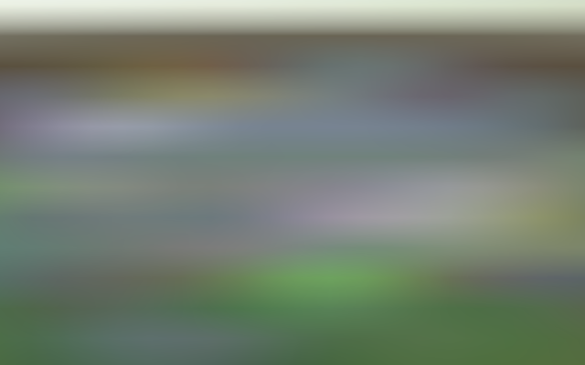
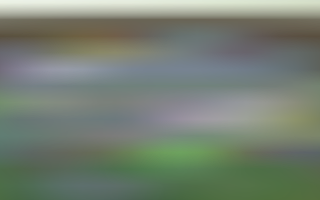

Post Processing
Bloom
- Create a simple post-FX stack.
- Alter the rendered image.
- Perform post-processing when needed.
- Make an artistic bloom effect.
This is the 11th part of a tutorial series about creating a custom scriptable render pipeline. It adds support for post processing, initially only bloom.
This tutorial is made with Unity 2019.4.4f1.
Post-FX Stack
Most of the time a rendered image isn't displayed as-is. The image is post-processed, getting various effects—FX for short—applied to it. Common FX include bloom, color grading, depth-of-field, motion blur, and tone mapping. These FX are applied as a stack, one on top of the other. In this tutorial we'll create a simple post-FX stack that initially only supports bloom.
Settings Asset
A project could require multiple post-FX stack configurations, so we begin by creating a PostFXSettings asset type to store the settings for a stack.
using UnityEngine;
[CreateAssetMenu(menuName = "Rendering/Custom Post FX Settings")]
public class PostFXSettings : ScriptableObject { }
We'll use a single stack in this tutorial, which we'll make available to the RP by adding a configuration option for it to CustomRenderPipelineAsset, which passes it to the RP's constructor.
[SerializeField]
PostFXSettings postFXSettings = default;
protected override RenderPipeline CreatePipeline () {
return new CustomRenderPipeline(
useDynamicBatching, useGPUInstancing, useSRPBatcher,
useLightsPerObject, shadows, postFXSettings
);
}
CustomRenderPipeline then has to keep track of the FX settings and pass them to the camera renderer along with the other settings during rendering.
PostFXSettings postFXSettings;
public CustomRenderPipeline (
bool useDynamicBatching, bool useGPUInstancing, bool useSRPBatcher,
bool useLightsPerObject, ShadowSettings shadowSettings,
PostFXSettings postFXSettings
) {
this.postFXSettings = postFXSettings;
…
}
protected override void Render (
ScriptableRenderContext context, Camera[] cameras
) {
foreach (Camera camera in cameras) {
renderer.Render(
context, camera,
useDynamicBatching, useGPUInstancing, useLightsPerObject,
shadowSettings, postFXSettings
);
}
}
CameraRenderer.Render initially does nothing with the settings, as we don't have a stack yet.
public void Render (
ScriptableRenderContext context, Camera camera,
bool useDynamicBatching, bool useGPUInstancing, bool useLightsPerObject,
ShadowSettings shadowSettings, PostFXSettings postFXSettings
) { … }
Now we can create an empty post-FX settings asset and assign it to the pipeline asset.
Stack Object
We'll use the same approach for the stack that we used for Lighting and Shadows. We create a class for it that keeps track of a buffer, context, camera, and post-FX settings, with a public Setup method to initialize them.
using UnityEngine;
using UnityEngine.Rendering;
public class PostFXStack {
const string bufferName = "Post FX";
CommandBuffer buffer = new CommandBuffer {
name = bufferName
};
ScriptableRenderContext context;
Camera camera;
PostFXSettings settings;
public void Setup (
ScriptableRenderContext context, Camera camera, PostFXSettings settings
) {
this.context = context;
this.camera = camera;
this.settings = settings;
}
}
Next, add a public property to indicate whether the stack is active, which is only the case if there are settings for it. The idea is that if no settings are provided post-processing should be skipped.
public bool IsActive => settings != null;
And the last part we need is a public Render method that renders the stack. Applying an effect to the entire image is done by simply drawing a rectangle that covers the entire image, using an appropriate shader. Right now we have no shader, so we'll simply copy whatever's rendered up to this point to the camera's frame buffer. That can be done by invoking Blit on the command buffer, passing it identifiers for the source and destination. These identifiers can be provided in multiple formats. We'll use an integer for a source, for which we'll add a parameter, and BuiltinRenderTextureType.CameraTarget for the destination. Then we execute and clear the buffer.
public void Render (int sourceId) {
buffer.Blit(sourceId, BuiltinRenderTextureType.CameraTarget);
context.ExecuteCommandBuffer(buffer);
buffer.Clear();
}
In this case we don't need to manually begin and end buffer samples, as we don't need to invoke ClearRenderTarget because we completely replace what was at the destination.
Using the Stack
CameraRenderer now needs a stack instance and invoke Setup on it in Render, just like it does for its Lighting object.
Lighting lighting = new Lighting();
PostFXStack postFXStack = new PostFXStack();
public void Render (…) {
…
lighting.Setup(
context, cullingResults, shadowSettings, useLightsPerObject
);
postFXStack.Setup(context, camera, postFXSettings);
buffer.EndSample(SampleName);
Setup();
…
}
Up to this point we always rendered directly to the camera's frame buffer, which is either one used for a display or a configured render texture. We have no direct control over those and are only supposed to write to them. So to provide a source texture for an active stack we have to use a render texture as an intermediate frame buffer for the camera. Getting one and setting it as the render target works like for shadow maps, except that we'll use the RenderTextureFormat.Default format. Do this before we clear the render target.
static int frameBufferId = Shader.PropertyToID("_CameraFrameBuffer");
…
void Setup () {
context.SetupCameraProperties(camera);
CameraClearFlags flags = camera.clearFlags;
if (postFXStack.IsActive) {
buffer.GetTemporaryRT(
frameBufferId, camera.pixelWidth, camera.pixelHeight,
32, FilterMode.Bilinear, RenderTextureFormat.Default
);
buffer.SetRenderTarget(
frameBufferId,
RenderBufferLoadAction.DontCare, RenderBufferStoreAction.Store
);
}
buffer.ClearRenderTarget(…);
buffer.BeginSample(SampleName);
ExecuteBuffer();
}
Also add a Cleanup method to release the texture if we have an active stack. We can move the lighting cleanup there as well.
void Cleanup () {
lighting.Cleanup();
if (postFXStack.IsActive) {
buffer.ReleaseTemporaryRT(frameBufferId);
}
}
Invoke Cleanup at the end of Render before submitting. Directly before that render the stack, if it is active.
public void Render (…) {
…
DrawGizmos();
if (postFXStack.IsActive) {
postFXStack.Render(frameBufferId);
}
Cleanup();
//lighting.Cleanup();
Submit();
}
At this point the result should look no different, but an extra draw step has been added, copying from the intermediate to the final frame buffer. It's listed in the frame debugger as Draw Dynamic.
Forced Clearing
When drawing to an intermediate frame buffer we render to a texture filled with arbitrary data. You can see this when the frame debugger is active. Unity makes sure the frame debugger gets a clear frame buffer at the start of each frame, but we sidestep this when rendering to our own texture. It usually results in us drawing on top of the previous frame's result, but this is not guaranteed. This doesn't matter if the camera's Clear Flags is set to the sky box or a solid color, as we're guaranteed to completely cover the previous data. But the other two options don't work. To prevent random results, when a stack is active always clear depth and also clear color unless a sky box is used.
CameraClearFlags flags = camera.clearFlags;
if (postFXStack.IsActive) {
if (flags > CameraClearFlags.Color€) {
flags = CameraClearFlags.Color€;
}
…
}
buffer.ClearRenderTarget(…);
Note that this makes it impossible to have a camera render on top of another without clearing when a post-FX stack is in use. There are ways around that, but that's out of the scope of this tutorial.
Gizmos
We're currently drawing all gizmos at the same time, but there is a distinction between those that should be rendered before and after post FX. So let's split the DrawGizmos method in two.
partial void DrawGizmosBeforeFX ();
partial void DrawGizmosAfterFX ();
…
#if UNITY_EDITOR
…
partial void DrawGizmosBeforeFX () {
if (Handles.ShouldRenderGizmos()) {
context.DrawGizmos(camera, GizmoSubset.PreImageEffects);
//context.DrawGizmos(camera, GizmoSubset.PostImageEffects);
}
}
partial void DrawGizmosAfterFX () {
if (Handles.ShouldRenderGizmos()) {
context.DrawGizmos(camera, GizmoSubset.PostImageEffects);
}
}
Then we can draw them at the correct time in Render.
//DrawGizmos();DrawGizmosBeforeFX(); if (postFXStack.IsActive) { postFXStack.Render(frameBufferId); } DrawGizmosAfterFX();
Note that when 3D icons are used for gizmos they are no longer obscured by objects when a stack is active. This happens because the scene window relies the depth data of the original frame buffer, which we don't use. We'll cover depth in combination with post FX in the future.

Custom Drawing
The Blit method that we current use draws a quad mesh—two triangles—that covers the entire screen space. But we could get the same results by drawing only a single triangle, which is a bit less work. We don't even need to send a single-triangle mesh to the GPU, we can generate it procedurally.
Create a PostFXStackPasses.hlsl file in our RP's Shaders folder. We'll put all passes of our stack in there. The first thing we'll define in it is the Varyings struct, which only needs to contain the clip-space position and screen-space UV coordinates.
#ifndef CUSTOM_POST_FX_PASSES_INCLUDED
#define CUSTOM_POST_FX_PASSES_INCLUDED
struct Varyings {
float4 positionCS : SV_POSITION;
float2 screenUV : VAR_SCREEN_UV;
};
#endif
Next, create a default vertex pass, with only a vertex identifier as a parameter. It's an unsigned integer—uint—with the SV_VertexID semantic. Use the ID to generate the vertex position and UV coordinates. The X coordinates are −1, −1, 3. The Y coordinates are −1, 3, −1. To make the visible UV coordinates cover the 0–1 range use 0, 0, 2 for U and 0, 2, 0 for V.

Varyings DefaultPassVertex (uint vertexID : SV_VertexID) {
Varyings output;
output.positionCS = float4(
vertexID <= 1 ? -1.0 : 3.0,
vertexID == 1 ? 3.0 : -1.0,
0.0, 1.0
);
output.screenUV = float2(
vertexID <= 1 ? 0.0 : 2.0,
vertexID == 1 ? 2.0 : 0.0
);
return output;
}
Add a fragment pass for simple copying, making it initially return the UV coordinates for debugging purposes.
float4 CopyPassFragment (Varyings input) : SV_TARGET {
return float4(input.screenUV, 0.0, 1.0);
}
Create an accompanying shader file in the same folder. All passes will use no culling and ignore depth, so we can put those directives directly in the Subshader block. We also always included our Common and PostFXStackPasses files. Its only pass right now is for copying, using the vertex and fragment functions that we created. We can also give it a name by using the Name directive, which is handy when combining multiple passes in the same shader, as the frame debugger will use it for the pass label instead of a number. Finally, put its menu item under the Hidden folder so it doesn't show up when selecting a shader for a material.
Shader "Hidden/Custom RP/Post FX Stack" {
SubShader {
Cull Off
ZTest Always
ZWrite Off
HLSLINCLUDE
#include "../ShaderLibrary/Common.hlsl"
#include "PostFXStackPasses.hlsl"
ENDHLSL
Pass {
Name "Copy"
HLSLPROGRAM
#pragma target 3.5
#pragma vertex DefaultPassVertex
#pragma fragment CopyPassFragment
ENDHLSL
}
}
}
We'll simply manually link the shader to our stack via its settings.
public class PostFXSettings : ScriptableObject {
[SerializeField]
Shader shader = default;
}
But we need a material when rendering, so add a public property which we can use to get a material directly from the settings asset. We'll create it on demand and set to hide and not save in the project. Also, the material cannot be serialized along with the asset because it's created on demand.
[System.NonSerialized]
Material material;
public Material Material€ {
get {
if (material == null && shader != null) {
material = new Material(shader);
material.hideFlags = HideFlags.HideAndDontSave;
}
return material;
}
}
As it's convenient to address passes by name instead of a number, create a Pass enum inside PostFXStack, initially only containing the copy pass.
enum Pass {
Copy
}
Now we can define our own Draw method. Give it two RenderTargetIdentifier parameters to indicate from where and to where should be drawn, plus a pass parameter. In it, make the source available via a _PostFXSource texture, use the destination as the render target as before, and then draw the triangle. We do that by invoking DrawProcedural on the buffer, with an unused matrix, the stack material, and the pass as arguments. After that come two more arguments. First is the kind of shape that we're drawing, which is MeshTopology.Triangles. Second is how many vertices we want, which is three for a single triangle.
int fxSourceId = Shader.PropertyToID("_PostFXSource");
…
void Draw (
RenderTargetIdentifier from, RenderTargetIdentifier to, Pass pass
) {
buffer.SetGlobalTexture(fxSourceId, from);
buffer.SetRenderTarget(
to, RenderBufferLoadAction.DontCare, RenderBufferStoreAction.Store
);
buffer.DrawProcedural(
Matrix4x4.identity, settings.Material€, (int)pass,
MeshTopology.Triangles, 3
);
}
Finally, replace the invocation of Blit with our own method.
//buffer.Blit(sourceId, BuiltinRenderTextureType.CameraTarget);Draw(sourceId, BuiltinRenderTextureType.CameraTarget, Pass.Copy);
Don't Always Apply FX
We should now see the screen-space UV coordinates appear in the scene window. And in the game window. And also in material previews and even in reflection probes, once they refresh.
The idea is that post FX get applied to proper cameras and nothing else. We can enforce this by checking whether we have a game or scene camera in PostFXStack.Setup. If not we set the settings to null, which deactivates the stack for that camera.
this.settings = camera.cameraType <= CameraType.SceneView€ ? settings : null;
Besides that, it's also possible to toggle post-processing in the scene window via its effects dropdown menu in its toolbar. It's possible to have multiple scene windows open at the same time, which can have post effects enabled or disabled individually. To support this create an editor partial class for PostFXStack with an ApplySceneViewState method that does nothing in a build. Its editor version checks whether we're dealing with a scene view camera and if so disables the stack if the currently drawing scene view's state has image effects disabled.
using UnityEditor;
using UnityEngine;
partial class PostFXStack {
partial void ApplySceneViewState ();
#if UNITY_EDITOR
partial void ApplySceneViewState () {
if (
camera.cameraType == CameraType.SceneView€ &&
!SceneView.currentDrawingSceneView.sceneViewState.showImageEffects
) {
settings = null;
}
}
#endif
}
Invoke this method at the end of Setup.
public partial class PostFXStack {
…
public void Setup (…) {
…
ApplySceneViewState();
}
Copying
We complete the stack by making our copy pass return the source color. Create a GetSource function for that, which does the sampling. We'll always use a linear clamp sampler so we can declare that explicitly.
TEXTURE2D(_PostFXSource);
SAMPLER(sampler_linear_clamp);
float4 GetSource(float2 screenUV) {
return SAMPLE_TEXTURE2D(_PostFXSource, sampler_linear_clamp, screenUV);
}
float4 CopyPassFragment (Varyings input) : SV_TARGET {
return GetSource(input.screenUV);
}
Because our buffer will never have mip maps we can sidestep automatic mip map selection by replacing SAMPLE_TEXTURE2D with SAMPLE_TEXTURE2D_LOD, adding an extra argument to force the selection of mip map level zero.
return SAMPLE_TEXTURE2D_LOD(_PostFXSource, sampler_linear_clamp, screenUV, 0);
We finally get the original image back, but in some cases it is upside down, typically in the scene window. This depends on the graphics API and the types of the source and destination. This happens because some graphics APIs have the texture V coordinate start at the top while others have it start at the bottom. Unity usually hides this, but cannot do so in all situations involving render textures. Fortunately Unity indicates whether a manual flip is needed via the X component of a _ProjectionParams vector, which we should define in UnityInput.
float4 _ProjectionParams;
If the value is negative we have to flip the V coordinate in DefaultPassVertex.
Varyings DefaultPassVertex (uint vertexID : SV_VertexID) {
…
if (_ProjectionParams.x < 0.0) {
output.screenUV.y = 1.0 - output.screenUV.y;
}
return output;
}
Bloom
The bloom post effect is used to make things glow. This has a basis in physics, but the classical bloom effect is artistic rather than realistic. The nonrealistic bloom is very obvious and is thus a good effect to demonstrate that our post FX stack works. We'll look at more realistic bloom in the next tutorial, when we'll cover HDR rendering. For now we'll aim for an LDR bloom glow effect.
Bloom Pyramid
Bloom represents the scattering of color, which can be done by blurring the image. Bright pixels will bleed into adjacent darker pixels and thus appear to glow. The simplest and fastest way to blur a texture is by copying it to another texture that has half the width and height. Each sample of the copy pass ends up sampling in between four source pixels. With bilinear filtering this averages blocks of 2×2 pixels.
Doing this a single time only blurs a little. So we repeat this process, progressively downsampling until a desired level, effectively building a pyramid of textures.
We need to keep track of the textures in the stack, but how many there are depends on how many levels there are in the pyramid, which depends on the source image size. Let's define a maximum of sixteen levels in PostFXStack, which would be enough to scale a 65,536×65,526 texture all the way down to a single pixel.
const int maxBloomPyramidLevels = 16;
To keep track of the textures in the pyramid we need texture identifiers. We'll use the property names _BloomPyramid0, _BloomPyramid1, and so on. But let's not write all these sixteen names explicitly. Instead we'll get the identifiers in a constructor method and only keep track of the first. This works because Shader.PropertyToID simply assigns identifiers sequentially in the order that new property names are requested. We just have to make sure that all identifiers are requested at once, because the numbers are fixed per application session, both in the editor and in builds.
int bloomPyramidId;
…
public PostFXStack () {
bloomPyramidId = Shader.PropertyToID("_BloomPyramid0");
for (int i = 1; i < maxBloomPyramidLevels; i++) {
Shader.PropertyToID("_BloomPyramid" + i);
}
}
Now create a DoBloom method that applies the bloom effect for a give source identifier. Begin by halving the camera's pixel width and height and selecting the default render texture format. Initially we'll copy from the source to the first texture in the pyramid. Keep track of those identifiers.
void DoBloom (int sourceId) {
buffer.BeginSample("Bloom");
int width = camera.pixelWidth / 2, height = camera.pixelHeight / 2;
RenderTextureFormat format = RenderTextureFormat.Default;
int fromId = sourceId, toId = bloomPyramidId;
buffer.EndSample("Bloom");
}
Then loop through all pyramid levels. Each iteration, begin by checking whether a level would become degenerate. If so we stop at that point. If not get a new render texture, copy to it, make that the new source, increment the destination, and halve the dimensions again. Declare the loop iterator variable outside the loop, as we need it later.
int fromId = sourceId, toId = bloomPyramidId;
int i;
for (i = 0; i < maxBloomPyramidLevels; i++) {
if (height < 1 || width < 1) {
break;
}
buffer.GetTemporaryRT(
toId, width, height, 0, FilterMode.Bilinear, format
);
Draw(fromId, toId, Pass.Copy);
fromId = toId;
toId += 1;
width /= 2;
height /= 2;
}
Once the pyramid is complete copy the end result to the camera target. Then decrement the iterator and loop backwards, releasing all textures that we claimed.
for (i = 0; i < maxBloomPyramidLevels; i++) { … }
Draw(fromId, BuiltinRenderTextureType.CameraTarget, Pass.Copy);
for (i -= 1; i >= 0; i--) {
buffer.ReleaseTemporaryRT(bloomPyramidId + i);
}
buffer.EndSample("Bloom");
Now we can replace the simple copy in Render with the bloom effect.
public void Render (int sourceId) {
//Draw(sourceId, BuiltinRenderTextureType.CameraTarget, Pass.Copy);
DoBloom(sourceId);
context.ExecuteCommandBuffer(buffer);
buffer.Clear();
}
Configurable Bloom
We're now blurring so much that the end result is almost uniform. You can inspect the intermediate steps via the frame debugger. Those steps appear more useful as end points, so let's make it possible to stop early.

We can do that in two ways. First, we can limit the amount of blur iterations. Second, we can set the downscale limit to a higher value. Let's support both, by adding a BloomSettings configuration struct inside PostFXSettings with options for them. Make it publicly available via a getter property.
[System.Serializable]
public struct BloomSettings {
[Range(0f, 16f)]
public int maxIterations;
[Min(1f)]
public int downscaleLimit;
}
[SerializeField]
BloomSettings bloom = default;
public BloomSettings Bloom => bloom;

Have PostFXStack.DoBloom use these settings to limit itself.
PostFXSettings.BloomSettings bloom = settings.Bloom;
int width = camera.pixelWidth / 2, height = camera.pixelHeight / 2;
RenderTextureFormat format = RenderTextureFormat.Default;
int fromId = sourceId, toId = bloomPyramidId;
int i;
for (i = 0; i < bloom.maxIterations; i++) {
if (height < bloom.downscaleLimit || width < bloom.downscaleLimit) {
break;
}
buffer.GetTemporaryRT(
toId, width, height, 0, FilterMode.Bilinear, format
);
…
}

Gaussian Filtering
Downsampling with a small 2×2 filter produces very blocky results. The effect can be improved a lot by using a larger filter kernel, for example an approximate 9×9 Gaussian filter. If we combine this with bilinear downsampling we double it to effectively 18×18. This is what the Universal RP and HDRP use for their bloom.
Although this operation blends 81 samples it is separable, which means that it can be split in a horizontal and a vertical pass, blending a single row or column of nine samples each. Thus we need to sample only 18 times, but with two draws per iteration.
Let's start with the horizonal pass. Create a new BloomHorizontalPassFragment function for it in PostFXStackPasses. It accumulates a row of nine samples centered on the current UV coordinates. We'll also downsample at the same time so each offset step is double the source texel width. The sample weights starting from the left are 0.01621622, 0.05405405, 0.12162162, 0.19459459, then 0.22702703 for the center and reversed for the other side.
float4 _PostFXSource_TexelSize;
float4 GetSourceTexelSize () {
return _PostFXSource_TexelSize;
}
…
float4 BloomHorizontalPassFragment (Varyings input) : SV_TARGET {
float3 color = 0.0;
float offsets[] = {
-4.0, -3.0, -2.0, -1.0, 0.0, 1.0, 2.0, 3.0, 4.0
};
float weights[] = {
0.01621622, 0.05405405, 0.12162162, 0.19459459, 0.22702703,
0.19459459, 0.12162162, 0.05405405, 0.01621622
};
for (int i = 0; i < 9; i++) {
float offset = offsets[i] * 2.0 * GetSourceTexelSize().x;
color += GetSource(input.screenUV + float2(offset, 0.0)).rgb * weights[i];
}
return float4(color, 1.0);
}
Also add a pass for it to the PostFXStack shader. I placed it above the copy pass, to keep them in alphabetical order.
Pass {
Name "Bloom Horizontal"
HLSLPROGRAM
#pragma target 3.5
#pragma vertex DefaultPassVertex
#pragma fragment BloomHorizontalPassFragment
ENDHLSL
}
Add an entry for it to the PostFXStack.Pass enum as well, again in the same order.
enum Pass {
BloomHorizontal,
Copy
}
Now we can use the bloom-horizontal pass when downsampling in DoBloom.
Draw(fromId, toId, Pass.BloomHorizontal);
 

At this point the result is obviously stretched horizontally, but it looks promising. We can create the vertical pass by duplicating BloomHorizontalPassFragment, renaming it, and switching from rows to columns. We downsampled in the first pass but this time we stay at the same size to complete the Gaussian filter, so the texel size offset shouldn't be doubled.
float4 BloomVerticalPassFragment (Varyings input) : SV_TARGET {
float3 color = 0.0;
float offsets[] = {
-4.0, -3.0, -2.0, -1.0, 0.0, 1.0, 2.0, 3.0, 4.0
};
float weights[] = {
0.01621622, 0.05405405, 0.12162162, 0.19459459, 0.22702703,
0.19459459, 0.12162162, 0.05405405, 0.01621622
};
for (int i = 0; i < 9; i++) {
float offset = offsets[i] * GetSourceTexelSize().y;
color += GetSource(input.screenUV + float2(0.0, offset)).rgb * weights[i];
}
return float4(color, 1.0);
}
Add a pass and enum entry for it as well. I won't shows those steps anymore from now on.
We now need an additional step in the middle of each pyramid level, for which we also have to reserve texture identifiers. We can do so by simply doubling the loop limit in the PostFXStack constructor. As we haven't introduced other shader property names the identifiers will all be in sequence, otherwise a restart of Unity would be needed.
public PostFXStack () {
bloomPyramidId = Shader.PropertyToID("_BloomPyramid0");
for (int i = 1; i < maxBloomPyramidLevels * 2; i++) {
Shader.PropertyToID("_BloomPyramid" + i);
}
}
In DoBloom the destination identifier now has to start one higher and increase by two after each downsampling step. Then the mid texture can be placed in between. The horizontal draw goes to the middle, followed by a vertical draw to the destination. We also have to release the additional textures, which is easiest by working backwards from the last pyramid source.

void DoBloom (int sourceId) {
…
int fromId = sourceId, toId = bloomPyramidId + 1;
for (i = 0; i < bloom.maxIterations; i++) {
…
int midId = toId - 1;
buffer.GetTemporaryRT(
midId, width, height, 0, FilterMode.Bilinear, format
);
buffer.GetTemporaryRT(
toId, width, height, 0, FilterMode.Bilinear, format
);
Draw(fromId, midId, Pass.BloomHorizontal);
Draw(midId, toId, Pass.BloomVertical);
fromId = toId;
toId += 2;
…
}
Draw(fromId, BuiltinRenderTextureType.CameraTarget, Pass.Copy);
for (i -= 1; i >= 0; i--) {
buffer.ReleaseTemporaryRT(fromId);
buffer.ReleaseTemporaryRT(fromId - 1);
fromId -= 2;
}
buffer.EndSample("Bloom");
}

Our downsampling filter is now complete and looks a lot better than simple bilinear filtering, at the cost of more texture samples. Fortunately we can reduce the amount of samples a bit by using bilinear filtering to sample in between the Gaussian sampling points at appropriate offsets. That reduces nine samples to just five. We can use this trick in BloomVerticalPassFragment. The offsets become 3.23076923 and 1.38461538 in both directions, with weights 0.07027027 and 0.31621622.
float offsets[] = {
-3.23076923, -1.38461538, 0.0, 1.38461538, 3.23076923
};
float weights[] = {
0.07027027, 0.31621622, 0.22702703, 0.31621622, 0.07027027
};
for (int i = 0; i < 5; i++) {
float offset = offsets[i] * GetSourceTexelSize().y;
color += GetSource(input.screenUV + float2(0.0, offset)).rgb * weights[i];
}
We cannot do this in BloomHorizontalPassFragment because we already use bilinear filtering for downsampling in that pass. Each of its nine samples averages 2×2 source pixels.
Additive Blurring
Using the top of the bloom pyramid as the final image produces a uniform blend that doesn't look like anything is glowing. We can get the desired result by progressively upsampling back down the pyramid, accumulating all levels in a single image.
We could use additive blending to combine two images, but let's use the same blend mode for all passes and instead add a second source texture. Claim an identifier for it in PostFXStack.
int
fxSourceId = Shader.PropertyToID("_PostFXSource"),
fxSource2Id = Shader.PropertyToID("_PostFXSource2");
Then no longer perform the final draw directly after finishing the pyramid in DoBloom. Instead, release the texture used for the horizontal draw of the last iteration and set the destination to the texture used for the horizontal draw one level lower.
//Draw(fromId, BuiltinRenderTextureType.CameraTarget, Pass.Copy);buffer.ReleaseTemporaryRT(fromId - 1); toId -= 5;
When we loop back we draw again each iteration, in the opposite direction, with the result of each level as the second source. This works only up to the fist level, so we have to stop one step earlier. After that draw to the final destination with the original image as the secondary source.
for (i -= 1; i > 0; i--) {
buffer.SetGlobalTexture(fxSource2Id, toId + 1);
Draw(fromId, toId, Pass.Copy);
buffer.ReleaseTemporaryRT(fromId);
buffer.ReleaseTemporaryRT(toId + 1);
fromId = toId;
toId -= 2;
}
buffer.SetGlobalTexture(fxSource2Id, sourceId);
Draw(fromId, BuiltinRenderTextureType.CameraTarget, Pass.Copy);
buffer.ReleaseTemporaryRT(fromId);
buffer.EndSample("Bloom");
To get this to work we need to make the secondary source available to the shader passes.
TEXTURE2D(_PostFXSource);
TEXTURE2D(_PostFXSource2);
SAMPLER(sampler_linear_clamp);
…
float4 GetSource2(float2 screenUV) {
return SAMPLE_TEXTURE2D_LOD(_PostFXSource2, sampler_linear_clamp, screenUV, 0);
}
And introduce a new bloom combine pass that samples and adds both textures. As before I only show the fragment program, not the new shader pass nor the new enum entry.
float4 BloomCombinePassFragment (Varyings input) : SV_TARGET {
float3 lowRes = GetSource(input.screenUV).rgb;
float3 highRes = GetSource2(input.screenUV).rgb;
return float4(lowRes + highRes, 1.0);
}
Use the new pass when upsampling.
for (i -= 1; i > 0; i--) {
buffer.SetGlobalTexture(fxSource2Id, toId + 1);
Draw(fromId, toId, Pass.BloomCombine);
…
}
buffer.SetGlobalTexture(fxSource2Id, sourceId);
Draw(
bloomPyramidId, BuiltinRenderTextureType.CameraTarget,
Pass.BloomCombine
);


We finally have an effect that looks like everything is glowing. But our new approach only works if there are at least two iterations. If we end up performing only a single iteration then we should skip the entire upsampling phase and only have to release the texture used for the first horizontal pass.
if (i > 1) {
buffer.ReleaseTemporaryRT(fromId - 1);
toId -= 5;
for (i -= 1; i > 0; i--) {
…
}
}
else {
buffer.ReleaseTemporaryRT(bloomPyramidId);
}
And if we end up skipping bloom entirely we have to abort and perform a copy instead.
int width = camera.pixelWidth / 2, height = camera.pixelHeight / 2;
if (
bloom.maxIterations == 0 ||
height < bloom.downscaleLimit || width < bloom.downscaleLimit
) {
Draw(sourceId, BuiltinRenderTextureType.CameraTarget, Pass.Copy);
buffer.EndSample("Bloom");
return;
}
Bicubic Upsampling
Although the Gaussian filter produces smooth results we still performing bilinear filtering when upsampling, which can give the glow a blocky appearance. This is most obvious where contract in the original image is high, especially when in motion.

We can smooth out these artifacts by switching to bicubic filtering. There is no hardware support for this, but we can use the SampleTexture2DBicubic function defined in the Filtering include file of the Core RP Library. Use it to create our own GetSourceBicubic function, by passing the texture and sampler state, UV coordinates, plus the texel size vector with the size pairs swapped. Beyond that it has an argument for the maximum texture coordinate which is simply 1, followed by another unused argument which can just be zero.
#include "Packages/com.unity.render-pipelines.core/ShaderLibrary/Filtering.hlsl"
…
float4 GetSourceBicubic (float2 screenUV) {
return SampleTexture2DBicubic(
TEXTURE2D_ARGS(_PostFXSource, sampler_linear_clamp), screenUV,
_PostFXSource_TexelSize.zwxy, 1.0, 0.0
);
}
Use the new function in the bloom-combine pass so we upsample with bicubic filtering.
float4 BloomCombinePassFragment (Varyings input) : SV_TARGET {
float3 lowRes = GetSourceBicubic(input.screenUV).rgb;
float3 highRes = GetSource2(input.screenUV).rgb;
return float4(lowRes + highRes, 1.0);
}

Bicubic sampling produces better results, but requires four weighed texture samples instead or a single sample. So let's make it optional via a shader boolean, in case it isn't needed. This corresponds to the High Quality bloom toggles of the Universal RP and HDRP.
bool _BloomBicubicUpsampling;
float4 BloomCombinePassFragment (Varyings input) : SV_TARGET {
float3 lowRes;
if (_BloomBicubicUpsampling) {
lowRes = GetSourceBicubic(input.screenUV).rgb;
}
else {
lowRes = GetSource(input.screenUV).rgb;
}
float3 highRes = GetSource2(input.screenUV).rgb;
return float4(lowRes + highRes, 1.0);
}
Add a toggle option for it to PostFXSettings.BloomSettings.
public bool bicubicUpsampling;
And pass it to the GPU in PostFXStack.DoBloom before we begin upsampling.
int
bloomBucibicUpsamplingId = Shader.PropertyToID("_BloomBicubicUpsampling"),
fxSourceId = Shader.PropertyToID("_PostFXSource"),
fxSource2Id = Shader.PropertyToID("_PostFXSource2");
…
void DoBloom (int sourceId) {
…
buffer.SetGlobalFloat(
bloomBucibicUpsamplingId, bloom.bicubicUpsampling ? 1f : 0f
);
if (i > 1) { … }
…
}
Half Resolution
Bloom can require a lot of time to generate, due to all the texture sampling and draws. A simple way to reduce the cost is to generate it at half resolution. As the effect is soft we can get away with this. This will change the appearance of the effect because we're effectively skipping the first iteration.
First, we should look one step ahead when deciding to skip bloom. Effectively, the downscale limit is doubled for the initial check.
if (
bloom.maxIterations == 0 ||
height < bloom.downscaleLimit * 2 || width < bloom.downscaleLimit * 2
) {
Draw(sourceId, BuiltinRenderTextureType.CameraTarget, Pass.Copy);
buffer.EndSample("Bloom");
return;
}
Second, we need to claim a texture for the half-size image that we'll use as the new starting point. It's not part of the bloom pyramid, so we'll claim a new identifier for it. We use it for a pre-filtering step, so name it appropriately.
int
bloomBucibicUpsamplingId = Shader.PropertyToID("_BloomBicubicUpsampling"),
bloomPrefilterId = Shader.PropertyToID("_BloomPrefilter"),
…
Back to DoBloom, copy the source to a pre-filter texture and use that for the start of the pyramid, also halving the width and height again. We don't need the pre-filter texture after going up the pyramid so can release it at that point.
RenderTextureFormat format = RenderTextureFormat.Default;
buffer.GetTemporaryRT(
bloomPrefilterId, width, height, 0, FilterMode.Bilinear, format
);
Draw(sourceId, bloomPrefilterId, Pass.Copy);
width /= 2;
height /= 2;
int fromId = bloomPrefilterId, toId = bloomPyramidId + 1;
int i;
for (i = 0; i < bloom.maxIterations; i++) {
…
}
buffer.ReleaseTemporaryRT(bloomPrefilterId);

Threshold
Bloom is often used artistically to make only some things glow, but our effect currently applies to everything, no matter how bright it is. Although it makes no physical sense, we can limit what contributes to the effect by introducing a brightness threshold.
We cannot suddenly eliminate colors from the effect as that would introduce sharp boundaries where a gradual transition is expected. Instead we'll multiply the color by a weight `w=(max(0,b-t))/(max(b,0.00001))`, where `b` is its brightness and `t` is the configured threshold. We'll use the maximum of the color's RGB channels for `b`. The result is always 1 when the threshold is zero, which leaves the color unchanged. As the threshold increases, the weight curve will bend downward so it becomes zero where `b<=t`. Because of the curve's shape, it's known as a knee curve.
This curve reaches zero at an angle, which means that although the transition is smoother than a clamp there is still an abrupt cutoff point. This is why it's also known as a hard knee. We can control the shape of the knee by changing the weight to `w=(max(s,b-t))/(max(b,0.00001))`, with `s=(min(max(0,b-t+tk),2tk)^2)/(4tk+0.00001)` and `k` a knee 0–1 slider.
Let's add both the threshold and knee slider to PostFXSettings.BloomSettings. We'll treat the configured threshold as a gamma value as that's visually more intuitive, so we'll have to convert it to linear space when sending it to the GPU. We make it open-ended, even though a threshold greater than zero will eliminate all colors at this point, as we're limited to LDR.
[Min(0f)] public float threshold; [Range(0f, 1f)] public float thresholdKnee;
We'll send the threshold values to the GPU via a vector that we'll name _BloomThreshold. Claim an identifier for it in PostFXStack.
bloomPrefilterId = Shader.PropertyToID("_BloomPrefilter"),
bloomThresholdId = Shader.PropertyToID("_BloomThreshold"),
We can compute the constant parts of the weight function and put them in the four components of our vector to keep the shader simpler: `[[t], [-t+tk], [2tk], [1/(4tk+0.00001)]]`.
We'll use it in a new pre-filter pass that replaces the initial copy pass in DoBloom, thus applying the threshold to the average of 2×2 pixels while we halve the image size.
Vector4 threshold; threshold.x = Mathf.GammaToLinearSpace(bloom.threshold); threshold.y = threshold.x * bloom.thresholdKnee; threshold.z = 2f * threshold.y; threshold.w = 0.25f / (threshold.y + 0.00001f); threshold.y -= threshold.x; buffer.SetGlobalVector(bloomThresholdId, threshold); RenderTextureFormat format = RenderTextureFormat.Default; buffer.GetTemporaryRT( bloomPrefilterId, width, height, 0, FilterMode.Bilinear, format ); Draw(sourceId, bloomPrefilterId, Pass.BloomPrefilter);
Add the threshold vector and a function that applies it to a color to PostFXShaderPasses, followed by the new pass function which uses it.
float4 _BloomThreshold;
float3 ApplyBloomThreshold (float3 color) {
float brightness = Max3(color.r, color.g, color.b);
float soft = brightness + _BloomThreshold.y;
soft = clamp(soft, 0.0, _BloomThreshold.z);
soft = soft * soft * _BloomThreshold.w;
float contribution = max(soft, brightness - _BloomThreshold.x);
contribution /= max(brightness, 0.00001);
return color * contribution;
}
float4 BloomPrefilterPassFragment (Varyings input) : SV_TARGET {
float3 color = ApplyBloomThreshold(GetSource(input.screenUV).rgb);
return float4(color, 1.0);
}


Intensity
We wrap up this tutorial by adding an intensity slider to control the overall strength of the bloom. We won't give it a limit so it's possible to blow out the entire image if desired.
[Min(0f)] public float intensity;

If the intensity is set to zero we can skip bloom, so check for that at the start of DoBloom.
if (
bloom.maxIterations == 0 || bloom.intensity <= 0f ||
height < bloom.downscaleLimit * 2 || width < bloom.downscaleLimit * 2
) {
Draw(sourceId, BuiltinRenderTextureType.CameraTarget, Pass.Copy);
buffer.EndSample("Bloom");
return;
}
Otherwise pass the intensity to the GPU, using a new identifier for _BloomIntensity. We'll use it to weight the low-resolution image during the combine pass, so we don't need to create an extra pass. Set it to 1 for all draws except the final draw to the camera target.
buffer.SetGlobalFloat(bloomIntensityId, 1f);
if (i > 1) {
…
}
else {
buffer.ReleaseTemporaryRT(bloomPyramidId);
}
buffer.SetGlobalFloat(bloomIntensityId, bloom.intensity);
buffer.SetGlobalTexture(fxSource2Id, sourceId);
Draw(fromId, BuiltinRenderTextureType.CameraTarget, Pass.BloomCombine);
Now we just need to multiply the low-resolution color in BloomCombinePassFragment with the intensity.
bool _BloomBicubicUpsampling;
float _BloomIntensity;
float4 BloomCombinePassFragment (Varyings input) : SV_TARGET {
…
return float4(lowRes * _BloomIntensity + highRes, 1.0);
}

The next tutorial is HDR.